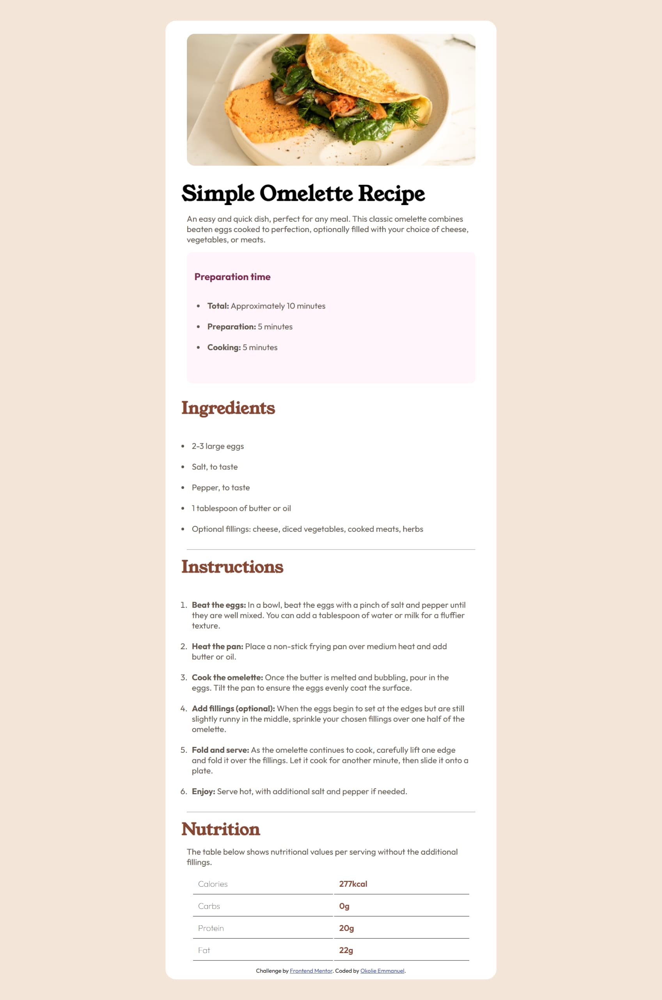

This project is a simple recipe web page built as a practice exercise to apply HTML structure, CSS styling, and basic JavaScript interaction. The emphasis was on clarity, layout consistency, and gradual refinement.
Below are images from my SIWES training period, reflecting hands-on learning, guided practice, and exposure to real development environments.
These activities and projects represent continuous practice rather than isolated tasks. The focus throughout the six months was steady improvement and better understanding of frontend development fundamentals.